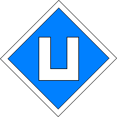
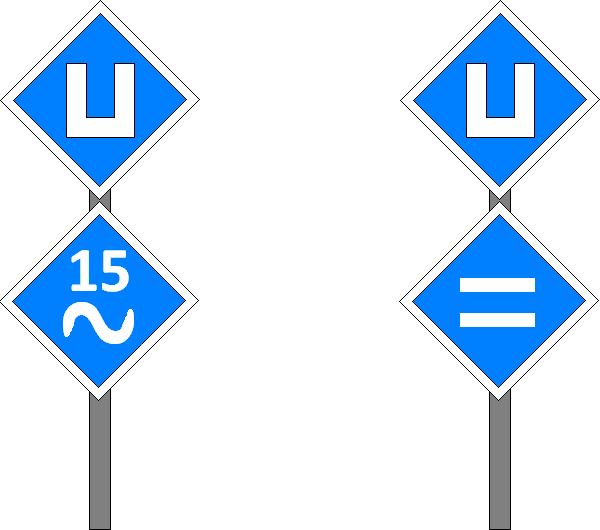

(1) Bedeutung
Einschalten erlaubt.
Signalbuch-Online
Signal El 2 - Einschaltsignal
Informationen zu Bedeutung, Beschreibung, Standort und Systemwechsel des Signal El 2.
(2) Beschreibung
Ein geschlossenes weißes U.

(3) Ausführung
Das Signal bedeutet, dass das Triebfahrzeug nach Vorbeifahrt am Signal eingeschaltet werden darf.
(4) Standort
Außerhalb der DB AG kann das Einschaltsignal auf eingleisigen Strecken unmittelbar links neben dem Gleis stehen.
(5) Systemwechsel
Im Bereich von Systemwechseln kann das Signal mit einer auf der Spitze stehenden weiß- und schwarzumrandeten
blauen quadratischen Tafel, auf der sich eine weiße Sinuskurve (Wechselstromsystem-Anfang) oder zwei waagerechte
weiße Streifen (Gleichstromsystemanfang) befinden, ergänzt sein. Über der Sinuskurve kann eine Zahl (Spannung) gezeigt werden.
Das Triebfahrzeug darf erst nach dem Systemwechsel wieder eingeschaltet werden.
blauen quadratischen Tafel, auf der sich eine weiße Sinuskurve (Wechselstromsystem-Anfang) oder zwei waagerechte
weiße Streifen (Gleichstromsystemanfang) befinden, ergänzt sein. Über der Sinuskurve kann eine Zahl (Spannung) gezeigt werden.
Das Triebfahrzeug darf erst nach dem Systemwechsel wieder eingeschaltet werden.
